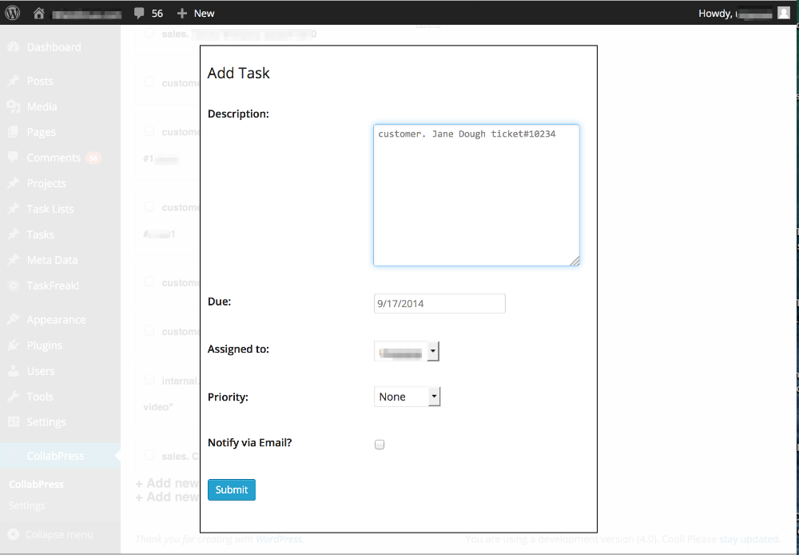
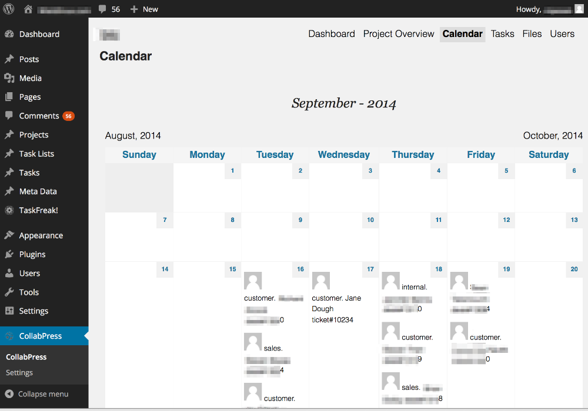
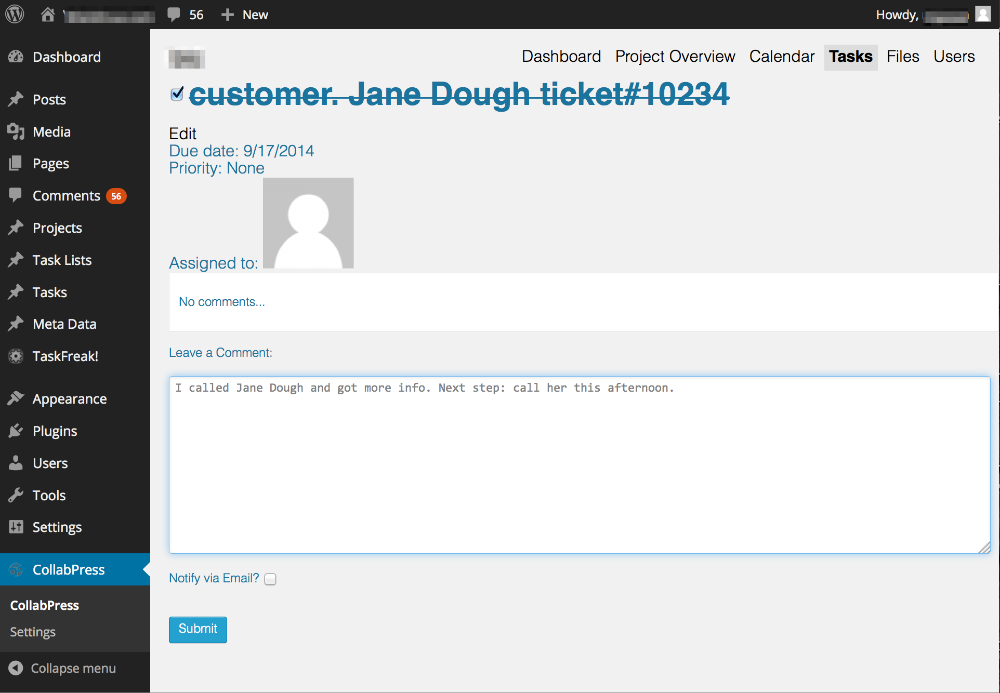

up one level
---
07:25:45
Using CollabPress as a Daily Task Tracker and a Work Activity Log for Software Customer Support
I use CollabPress as a daily task tracker and a work activity log for software customer support. Here’s my workflow.
When I take on a new task– for example from a customer or a co-worker, I create a new task by going to the CollabPress "Tasks" page, scrolling to the bottom and clicking on the "+Add new task" link. This brings up the Add Task lightbox where I enter a Description and Due Date and click the Submit button. Depending on the urgency or priority of the issue I can set the Due Date today as opposed to tomorrow or further in the future.

When it’s time to triage or work on my tasks, I use CollabPress’ Calendar view. This shows me all my tasks laid out, by Due Date, in a monthly calendar view. So I work on today’s tasks and when they’re finised I work on tomorrow’s tasks.

On the calendar view, clicking on a task brings up its details. In this screen I can check the checkbox next to the task’s title which closes the task. I can type a note in the "Leave a comment" box and click Submit, which makes a timestamped note. I do this when I’ve significantly progressed the software customer support case.

For reporting, if I want to see for the past week all the notes I made along with their time+date stamps and which task the note applied to, I haven’t figured out how within CollabPress. For now I made a SQL query on the MySQL database that gives me this:
SELECT wp_comments.comment_date_gmt, wp_posts.post_title, wp_comments.comment_content
FROM wp_comments
JOIN wp_posts ON (wp_posts.ID = wp_comments.comment_post_ID)
WHERE comment_type = collabpress ORDER BY wp_comments.comment_date_gmt DESC;
As a Software Customer Support Engineer That’s how I use CollabPress as a daily task tracker and a work activity log.
*2014-12-05 edit: previously published at http://w̶i̶e̶l̶d̶l̶i̶n̶u̶x̶.̶c̶o̶m̶/?p=548
[2020 edit: Moved to: https://i̶n̶v̶e̶s̶t̶o̶r̶w̶o̶r̶k̶e̶r̶.̶c̶o̶m̶/2014/... .html.]